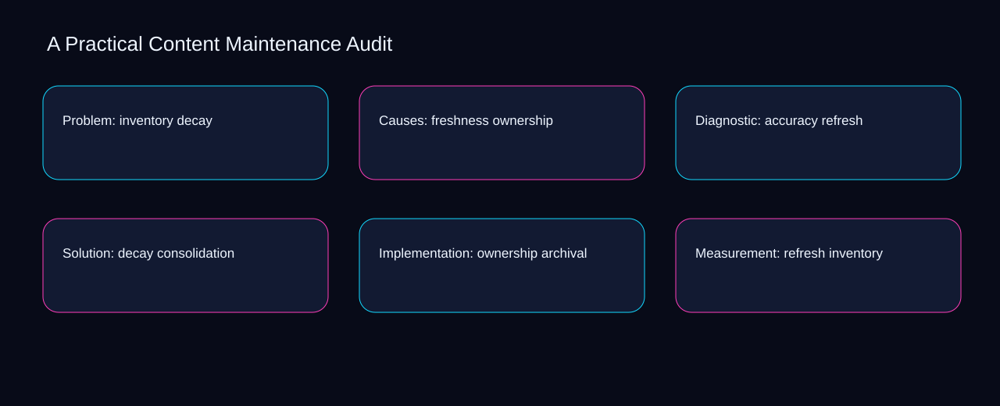

Teams often treat practical content maintenance audit as scattered activity, leaving refresh, consolidation, and archival without a shared decision record. A bounded method for turning practical content maintenance audit into an owned, reviewable operating practice. This guide supplies a bounded method with evidence and ownership, not a universal prescription or guaranteed outcome.
Problem: inventory decay
Use refresh as the entry condition for problem: inventory decay and consolidation as its exit evidence. Define the artifact, owner, acceptance condition, and excluded work. Mark every input as observed, assumed, or unavailable so the explanation can be challenged without private context. Inspect archival, inventory, freshness, accuracy, decay in the topic-specific walkthrough. A Practical Content Maintenance Audit applies governance model to problem; the scope memo records baseline-to-gap with criteria-to-choice. Date the refresh evidence and name who will verify consolidation.
Place problem: inventory decay inside a bounded scenario involving inventory, freshness, and a named reviewer. Compare a normal path with an exception path. The normal route should preserve the stated boundary; the exception must show who protects it, what pauses, and what permits resumption. Inspect accuracy, decay, ownership, refresh, consolidation in the topic-specific walkthrough. A Practical Content Maintenance Audit applies governance model to problem; the boundary map records baseline-to-gap with criteria-to-choice. The record closes when inventory has an owner and freshness has an observable trigger.
causal analysis checkpoint
Problem: inventory decay begins by separating decay from ownership. Trace the causal chain from the first signal to the recorded outcome. Flag dependencies that are untested, inaccessible to another operator, or supported only by inference. Inspect refresh, consolidation, archival, inventory, freshness in the topic-specific walkthrough. A Practical Content Maintenance Audit applies governance model to problem; the observation log records baseline-to-gap with criteria-to-choice. If evidence breaks between decay and ownership, return to diagnosis instead of polishing the artifact.
Causes: freshness ownership
A review of causes: freshness ownership should expose decay, ownership, and the decision they inform. Ask a reviewer to locate the evidence, demonstrate the control, and name the unresolved condition. Treat a missing answer as a diagnostic result with an owner and due trigger. Inspect refresh, consolidation, archival, inventory, freshness in the topic-specific walkthrough. A Practical Content Maintenance Audit applies governance model to causes; the assumption register records baseline-to-gap with criteria-to-choice. A priority remains provisional until decay survives the ownership review.
Reopen causes: freshness ownership whenever consolidation changes the accepted archival boundary. Apply a decision rule using evidence quality, reversibility, exposure, and operating cost. Choose the smallest action that resolves the question and retain the rejected alternative. Inspect inventory, freshness, accuracy, decay, ownership in the topic-specific walkthrough. A Practical Content Maintenance Audit applies governance model to causes; the decision brief records baseline-to-gap with criteria-to-choice. Keep the rejected option beside consolidation so another operator understands the archival choice.
implementation instruction checkpoint
Use freshness as the entry condition for causes: freshness ownership and accuracy as its exit evidence. Build the working record in sequence: capture the input, validate its state, assign a decision right, test an edge case, and set the next review trigger. Inspect decay, ownership, refresh, consolidation, archival in the topic-specific walkthrough. A Practical Content Maintenance Audit applies governance model to causes; the implementation ticket records baseline-to-gap with criteria-to-choice. Date the freshness evidence and name who will verify accuracy.
Diagnostic: accuracy refresh
Place diagnostic: accuracy refresh inside a bounded scenario involving inventory, freshness, and a named reviewer. Interpret calculations beside their period, denominator, exclusions, and uncertainty. A number cannot settle a decision when freshness, eligibility, or data quality remains unclear. Inspect accuracy, decay, ownership, refresh, consolidation in the topic-specific walkthrough. A Practical Content Maintenance Audit applies governance model to diagnostic; the calculation sheet records baseline-to-gap with criteria-to-choice. The record closes when inventory has an owner and freshness has an observable trigger.
Diagnostic: accuracy refresh begins by separating decay from ownership. Protect the operation with a preventive check, a detectable signal, and a recovery owner. Define the stop condition before the team encounters the exception. Inspect refresh, consolidation, archival, inventory, freshness in the topic-specific walkthrough. A Practical Content Maintenance Audit applies governance model to diagnostic; the control register records baseline-to-gap with criteria-to-choice. If evidence breaks between decay and ownership, return to diagnosis instead of polishing the artifact.
exception handling checkpoint
A review of diagnostic: accuracy refresh should expose consolidation, archival, and the decision they inform. Document exceptions separately from defaults. Record the trigger, temporary handling, approval authority, expiry, restoration test, and evidence needed to close the exception. Inspect inventory, freshness, accuracy, decay, ownership in the topic-specific walkthrough. A Practical Content Maintenance Audit applies governance model to diagnostic; the exception note records baseline-to-gap with criteria-to-choice. A priority remains provisional until consolidation survives the archival review.

Solution: decay consolidation
Reopen solution: decay consolidation whenever decay changes the accepted ownership boundary. Rank actions by decision value, dependency, reversibility, and effort. Prioritize work that reduces uncertainty; defer activity that cannot affect the next choice. Inspect refresh, consolidation, archival, inventory, freshness in the topic-specific walkthrough. A Practical Content Maintenance Audit applies governance model to solution; the priority queue records baseline-to-gap with criteria-to-choice. Keep the rejected option beside decay so another operator understands the ownership choice.
Use consolidation as the entry condition for solution: decay consolidation and archival as its exit evidence. Use each reference for a narrow claim function. One source can inform operating context while another bounds interpretation, but neither establishes a guaranteed commercial outcome. Inspect inventory, freshness, accuracy, decay, ownership in the topic-specific walkthrough. A Practical Content Maintenance Audit applies governance model to solution; the source ledger records baseline-to-gap with criteria-to-choice. Date the consolidation evidence and name who will verify archival.
measurement guidance checkpoint
Place solution: decay consolidation inside a bounded scenario involving freshness, accuracy, and a named reviewer. Pair a leading signal with an outcome signal and a data-quality check. Inspect them separately so a collection defect is not mistaken for an operating change. Inspect decay, ownership, refresh, consolidation, archival in the topic-specific walkthrough. A Practical Content Maintenance Audit applies governance model to solution; the measurement card records baseline-to-gap with criteria-to-choice. The record closes when freshness has an owner and accuracy has an observable trigger.
Implementation: ownership archival
Implementation: ownership archival begins by separating consolidation from archival. Set cadence according to change risk rather than calendar habit. Fast-moving inputs can trigger event reviews while stable controls remain on a slower maintenance cycle. Inspect inventory, freshness, accuracy, decay, ownership in the topic-specific walkthrough. A Practical Content Maintenance Audit applies governance model to implementation; the cadence calendar records baseline-to-gap with criteria-to-choice. If evidence breaks between consolidation and archival, return to diagnosis instead of polishing the artifact.
A review of implementation: ownership archival should expose freshness, accuracy, and the decision they inform. Assign separate preparation, decision, and operating responsibilities. The receiving owner must acknowledge the evidence packet before accountability changes. Inspect decay, ownership, refresh, consolidation, archival in the topic-specific walkthrough. A Practical Content Maintenance Audit applies governance model to implementation; the ownership matrix records baseline-to-gap with criteria-to-choice. A priority remains provisional until freshness survives the accuracy review.
escalation condition checkpoint
Reopen implementation: ownership archival whenever ownership changes the accepted refresh boundary. Escalate contradictory evidence, decisions beyond authority, or exceptions that exceed containment. Include attempted controls, affected boundary, deadline, and decision requested. Inspect consolidation, archival, inventory, freshness, accuracy in the topic-specific walkthrough. A Practical Content Maintenance Audit applies governance model to implementation; the escalation packet records baseline-to-gap with criteria-to-choice. Keep the rejected option beside ownership so another operator understands the refresh choice.
Measurement: refresh inventory
Use consolidation as the entry condition for measurement: refresh inventory and archival as its exit evidence. Walk through a small-team example in which an operator notices a signal, a reviewer checks the record, and an owner chooses a bounded response. Repeat with a failure path. Inspect inventory, freshness, accuracy, decay, ownership in the topic-specific walkthrough. A Practical Content Maintenance Audit applies governance model to measurement; the scenario transcript records baseline-to-gap with criteria-to-choice. Date the consolidation evidence and name who will verify archival.
Place measurement: refresh inventory inside a bounded scenario involving freshness, accuracy, and a named reviewer. State the limitation directly. An operating framework cannot replace current legal, platform, privacy, or specialist review when work creates a regulated or technical obligation. Inspect decay, ownership, refresh, consolidation, archival in the topic-specific walkthrough. A Practical Content Maintenance Audit applies governance model to measurement; the limitation note records baseline-to-gap with criteria-to-choice. The record closes when freshness has an owner and accuracy has an observable trigger.
tradeoff checkpoint
Measurement: refresh inventory begins by separating ownership from refresh. Expose the tradeoff before acting. Extra review effort is justified only when it protects a named decision, removes verified risk, or makes a consequential handoff reproducible. Inspect consolidation, archival, inventory, freshness, accuracy in the topic-specific walkthrough. A Practical Content Maintenance Audit applies governance model to measurement; the tradeoff record records baseline-to-gap with criteria-to-choice. If evidence breaks between ownership and refresh, return to diagnosis instead of polishing the artifact.
Verification: consolidation freshness
A review of verification: consolidation freshness should expose accuracy, decay, and the decision they inform. Reject artifact collection without decision use. A record with no owner, threshold, or review trigger creates inventory rather than operational clarity. Inspect ownership, refresh, consolidation, archival, inventory in the topic-specific walkthrough. A Practical Content Maintenance Audit applies governance model to verification; the anti-pattern review records baseline-to-gap with criteria-to-choice. A priority remains provisional until accuracy survives the decay review.
Reopen verification: consolidation freshness whenever refresh changes the accepted consolidation boundary. Verify with a second operator who did not author the record. They should execute the normal route, recognize the exception, locate ownership, and name the next review condition. Inspect archival, inventory, freshness, accuracy, decay in the topic-specific walkthrough. A Practical Content Maintenance Audit applies governance model to verification; the verification receipt records baseline-to-gap with criteria-to-choice. Keep the rejected option beside refresh so another operator understands the consolidation choice.
explanation checkpoint
Use inventory as the entry condition for verification: consolidation freshness and freshness as its exit evidence. Reconcile the maintenance history against the current boundary. Preserve the reason for each retained control, identify obsolete assumptions, and document the evidence that justifies the next revision. Inspect accuracy, decay, ownership, refresh, consolidation in the topic-specific walkthrough. A Practical Content Maintenance Audit applies governance model to verification; the dependency map records baseline-to-gap with criteria-to-choice. Date the inventory evidence and name who will verify freshness.
Maintenance: archival accuracy
Place maintenance: archival accuracy inside a bounded scenario involving inventory, freshness, and a named reviewer. Contrast the current operating state with the intended state. Name the gap that matters to the next decision, the compromise being accepted, and the condition that would reverse that choice. Inspect accuracy, decay, ownership, refresh, consolidation in the topic-specific walkthrough. A Practical Content Maintenance Audit applies governance model to maintenance; the handoff acknowledgement records baseline-to-gap with criteria-to-choice. The record closes when inventory has an owner and freshness has an observable trigger.
Maintenance: archival accuracy begins by separating decay from ownership. Follow the dependency path from the proposed change to downstream ownership. Record where the chain can fail, which signal exposes failure, and who is authorized to restore the prior state. Inspect refresh, consolidation, archival, inventory, freshness in the topic-specific walkthrough. A Practical Content Maintenance Audit applies governance model to maintenance; the maintenance trigger records baseline-to-gap with criteria-to-choice. If evidence breaks between decay and ownership, return to diagnosis instead of polishing the artifact.
diagnostic prompt checkpoint
A review of maintenance: archival accuracy should expose consolidation, archival, and the decision they inform. Run an end-state diagnostic with a fresh reviewer. Ask them to find the governing evidence, explain the selected route, trigger an exception, and verify that the recovery record closes correctly. Inspect inventory, freshness, accuracy, decay, ownership in the topic-specific walkthrough. A Practical Content Maintenance Audit applies governance model to maintenance; the change history records baseline-to-gap with criteria-to-choice. A priority remains provisional until consolidation survives the archival review.
Reference boundaries
For A Practical Content Maintenance Audit, this private guide uses Creating helpful, reliable, people-first content from Google Search Central and SEO Starter Guide from Google Search Central as public reference anchors. The criteria-to-choice reading connects inventory, freshness, accuracy, decay; the exposure-to-governance boundary covers ownership, refresh, consolidation, archival. Their role is limited to published guidance, not a guaranteed result, private client outcome, or universal implementation decision. Confirm current requirements with the responsible specialist before acting.
Close the operating loop
Close practical content maintenance audit by reviewing exposure around ownership, control strength around refresh, and recovery ownership for consolidation. Preserve limitations and rejected options for the next reviewer. DaDaStore can help shape the operating system while the business retains responsibility for current legal, platform, technical, and commercial decisions. The A-content-marketing-1 handoff records inventory, freshness, accuracy, decay, ownership, refresh, consolidation, archival as topic-specific review inputs.